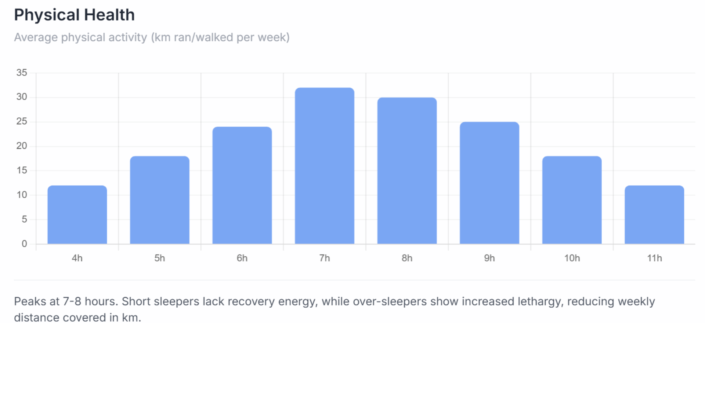
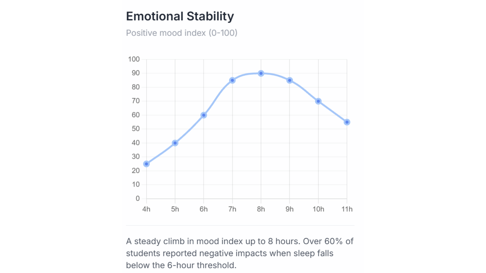
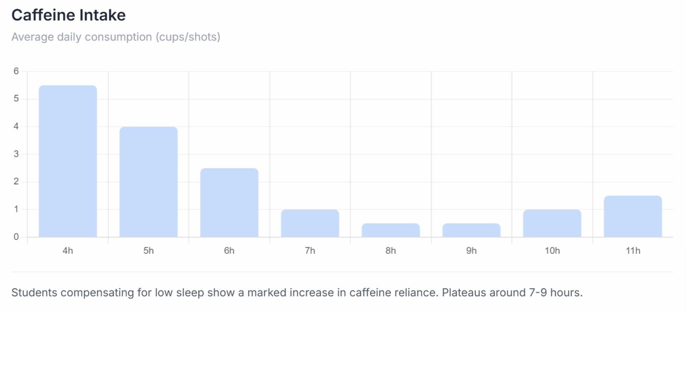

Sleep vs Physical Performance

This graph analyses the physical health based on the average amount of physical activity per week in the form of km travelled per week.
We can see here that the most optimal amount of sleep for physical activity is 7-8 hours, with anything more or anything less leading to a decrease in physical activity. KM travelled dropped by more than half in most cases of little or excess sleep. This could be due to the lack of energy received from little sleep, or lack of time to travel with excess sleep.

This graph analyses the emotional stability of subjects with different hours of sleep. Again the most optimal range for emotional stability is 7-9 hours with the most optimal being around the 8 hour mark.
With proper sleep, your brains are able to properly process your memories and properly handle stress, allowing you to work and focus a lot better than with little sleep.

Unsurprisingly, individuals who got little sleep reported to have a much higher caffeine consumption than people with good-quality sleep. If we link caffeine consumption to tiredness, we can see that the least tired people got 7-9 hours of sleep and consumed less than 2 cups of coffee per day.
The people who got the least sleep also increased their caffeine intake, averaging 1.5 cups per day. This could be due to the caffeine that they consumed keeping them awake for longer, which leads to a higher amount of sleep to compensate.